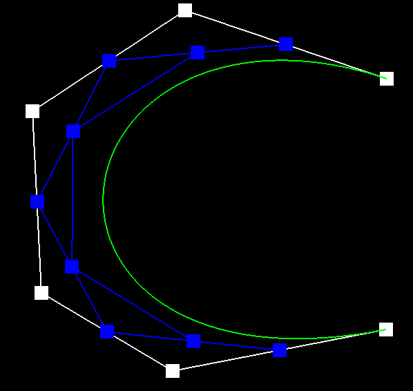
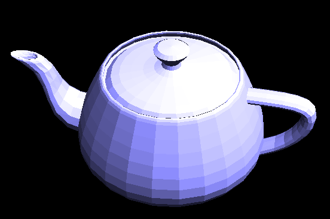
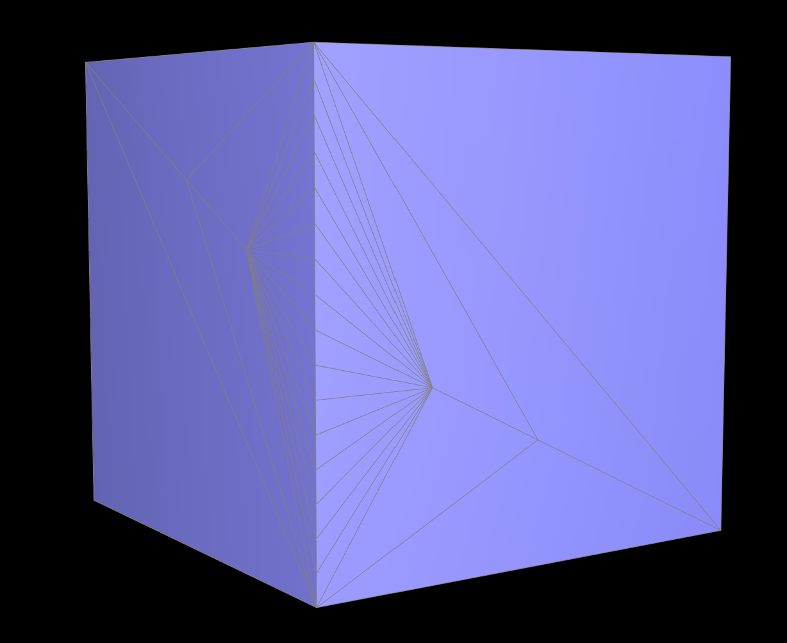

CS 284: Computer Graphics and Imaging, Spring 2020
Project 2: Mesh Editor
Dhruv Swarup, CS284
Overview
In the project, we dealt with 3D surfaces and meshes. We first created bezier curves and surfaces. After that,
we dealt with rendering meshes. The first part of this was to use phong shading by calcualting surface normals.
The next phase of the project was processing meshes: splits, flips and subdivisions. The one main thing I learnt
from this was how meshes are represented, and how to approach writing mesh editing algorithms.
Section I: Bezier Curves and Surfaces
Part 1: Bezier curves with 1D de Casteljau subdivision
Casteljau's algorithm is used to recursively sample a bezier curve given some control points.
It works by linearly interpolating each continuous pair of 'n' points by a value 't', which
varies from 0 to 1. This results in n-1 interpolated values in between each pair considered
before. This process is repeated for the points we just obtained, recursively, until we reach
one point.
For example, for a cubic bezier curve, there are 4 control points: p1, p2, p3, p4. Consider a
"time" t = 0.5: a point in the middle of the curve. The pairs (p1, p2), (p2, p3), (p3, p4),
are interpolated to give points p12, p23, p34. These are interpolated again as pairs
(p12, p23), (p23, p34), to give the points p123, p234. Finally, these are interpolated again
to give the final point 'p' on the curve. Fig 1 shows these points on an example curve.
|
Figure 1: Lerps in Bezier Curve Calculation
|
Here is a Bezier curve with 6 control points. Each image progressively shows one more level of
linear interpolation from the previously interpolated points. In the final image, the control points have been
modified, and the sample has been shown for a different 't'.
|
Figure 2: No lerp
|
Figure 3: 1 level of lerp
|
|

Figure 4: 2 levels of lerp
|
 Figure 5: 3 levels of lerp
Figure 5: 3 levels of lerp
|
|
Figure 6: 4 levels of lerp
|
Figure 7: 5 levels of lerp
|
Part 2: Bezier surfaces with separable 1D de Casteljau subdivision
The de Casteljau algorithm can be applied to create surfaces as well, by first interpolating
all the curves in the same axis, with the same interpolation value u. And then, all
of these obtained points are interpolated with the constant v in the other direction.
In this case, consider a 4x5 grid of points for a bezier surface. For calculating a
point at u, v interpolation value, we first interpolate all the 4 rows individually, and
this gives us a set of 5 points. Then we interpolate the 5 points to give us one value.
Section II: Sampling
Part 3: Average normals for half-edge meshes
The basic idea of this implementation was to first iterate through all the triangles
around the vertex. This is done by starting at the main halfedge, and then moving to
the "halfedge->twin()->next()" halfedge. For each triangle, I iterate thorugh each vertex,
and calculate the cross product between two of its sides. This gives an area weighted normal.
The normals for each triangle around the orginal vertex are summed, and then normalized.
|

Figure 10: Default Teapot Shading
|
Figure 11: Phong Shading
|
Part 4: Half-edge flip
The edge flip operation is done by changing the pointers to all the half edges of all the
elements in consideration, based on the flip change. It also requires that we edit the half
edges themselves to point to the correct vertices, faces, etc. The whole operation is just
pointer manipulation. I used the following reference image
(source)
to perform my changes:
 Figure 12: Edge flip operation
Figure 12: Edge flip operation
|
For the implementation, the main goal was to be able to neatly write all the structures involved,
and then change them in another section. Following the naming convention from the image above helped a lot.
The main problem that I faced was that multiple flips made the edge disappear. After playing around
with the teaport mesh, and flipping edges, I realised that sometimes the edge's were getting collapsed.
So, I went through the setneighbour function and there was one edge not being set correctly. Here
are some images of the teapot after edge mofifications:
|
Figure 12: Original Mesh
|
Figure 13: After Many Flips
|
Part 5: Half-edge split
This part was implemented in the same way as the edge flip. The only difference was the creation of new elements.
The figure used for this part is below . The highlighted names are the new elements.
|
Figure 14: Reference figure after split
|
Here is the mesh before and after edge splits:
|
Figure 15: Original Mesh
|
Figure 16: After Many Splits
|
Here is the mesh before and after edge flips and splits:
|
Figure 17: Original Mesh
|
Figure 18: After Many Flips and Splits
|
The main debugging issue I had here was the newEdge function seemed to cause the program to crash.
First, I read the mesh cpp and h files to understand the invocation of the functions. My calls
seemed correct. Commenting out those functions made the program not crash. I was very confused, so
I added some print statements. Turns out the whole function was executing. I triple checked the assignments
and they were defintely right. I finally realised that I had not updated the edges at all.
Part 6: Loop subdivision for mesh upsampling
The main idea behind loop subdivision is to divide each triangles into 4 similar sized triangles, such
that their vertices are updated to give a smoother mesh. The process of doing this is divided into
3 steps:
1. The first is to calculate the position of each new vertex. In this step, we first calculate the
final positions of the original vertices, based on its neighbours. Then, we do the same for the vertices
that will eventually be created and lie on the original edges. All these calculations are based only
on the original mesh, and thus these are done first.
2. The next step is to do the triangle subdivision. This process is much easier when divided into
2 steps. The first is to split all the original edges in any order. And the second is to flip all the new
edges that connect an old and a new vertex. This gives us the almost evenly divided triangles.
3. The final step is to update the vertes value that we calculated before. This is very straightforward,
and the only difficulty here is finding the edge that stores the new vertex position.
In the following images, we can see that after each subdivsion of a cube, it becomes smoother each time (Explanation and solution below). Each
edge, and corner also becomes smoother, and the hard split is gone. In the case of the cube, the mesh also
becomes asymetric. Because each face of the cube is simply 2 triangles, it is not a symmetric division of the face.
This is mainly why the result is asymmetric. By diving each face into 4 triangles (Fig 23), where each original edge
corresponds to one of the new triangles, the cube can now divide symetrically (Fig 24). The images below show this effect:
|
Figure 19: Original Mesh
|
Figure 20: After 1 subdivision
|
|
Figure 21: After 2 Subdivisions
|
Figure 22: After Multiple Subdivisions
|
|
Figure 23: Preprocessed Cube
|
Figure 24: Subdividing the Preprocessed Cube- Side View
|
As noted before, the sharp corners and edges get smoothed out. In many cases this is undesirable, and we
need to preserve the sharp corners. We can do some preprocessing to preserve the sharp corners. The idea
I had was to iterate through the mesh after the subdivision, but before the assignment of the new vertex
positions. In this loop, we would check the angle between the normals of the faces that surround the edge.
If this is greater than a certain threshhold, then reset the vertex newpositions to position, so that doesnt change.
And also, reset the edge isnew property to true, to prevent that from updating as well. I implemented this
to prove that it works, and we can see the results below. Note that the angle threshold in my implementation
has been set to 60 degrees: i.e. any face who''s normals are more than 60 degs apart, will not be split.
The image is taken from the teapot mesh, where the top part of the handle meets the main teapot.
In Fig. 24/25, we can see that the normal subdivision process results in a smooth connection.
In Fig 26/27, we can clearly see the effect that preserving edges has. The transition to the teapot's
surface is obvious and more apparent.
|
Figure 23: Original Handle Intersection Mesh
|
|
Figure 24: Normal Subdivision (With Mesh)
|
Figure 25: Normal Subdivision (Without Mesh)
|
 Figure 26: Edge Preservation Subdivision (With Mesh)
Figure 26: Edge Preservation Subdivision (With Mesh)
|
Figure 27: Edge Preservation Subdivision (Without Mesh)
|
Another possible method of doing this edge preservation would be to simply split the edges and corners multiple times.
This way, the curve produced will be much smaller, and the edges will seem sharper. In the following images, I first
split some edges around the right edge of the cube. Then I subdivided the cube multiple times, and show that result on the right.
We can clearly notice that the right edge is much sharper than that in Fig 22/24.
|

Figure 28: Divide the right edge
|
Figure 29: Subdivision Shows Sharp Right Edge
|
Section III: Optional Extra Credit
If you are not participating in the optional mesh competition, don't worry about this section!
Part 7: Design your own mesh!